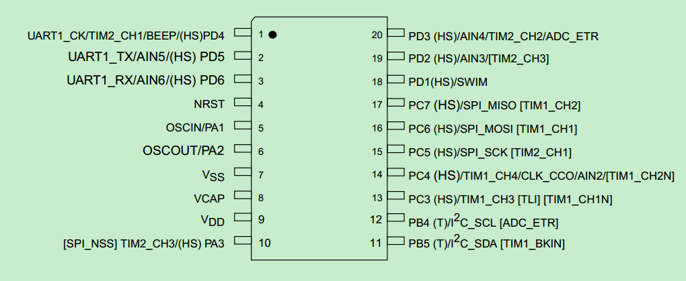
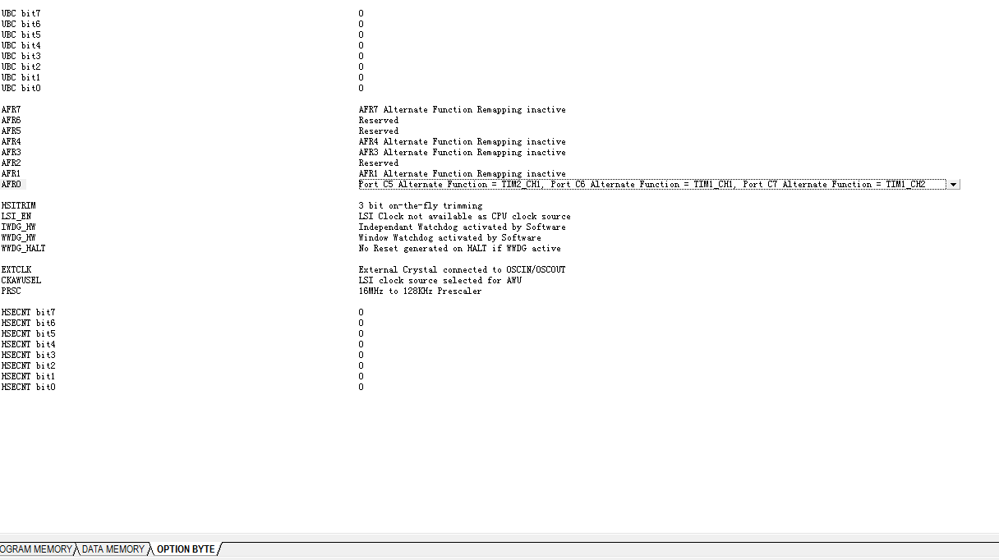

how to open stm8 alternate function
Updated:
什么是STM8复用功能

上图Pinout，用中括号括起来的功能，在默认情况下是关闭的，必须要经过设置才能打开。这个功能是复用功能。
复用功能怎么控制
通过option bytes 中的AFR寄存器来控制
修改方法
1.使用STVP烧录软件修改

切换到option bytes可以看到设置，很方便。缺点是，只能用这个软件改
2.代码修改
搭配库函数，在初始化时钟后，增加下面的代码12345678910111213141516//配置复用功能 PC7 -- TIM1_CH2FLASH_SetProgrammingTime(FLASH_PROGRAMTIME_STANDARD);/* Unlock EEPROM Data memory */FLASH_Unlock(FLASH_MEMTYPE_PROG);FLASH_Unlock(FLASH_MEMTYPE_DATA);AFRxx=FLASH_ReadOptionByte(0x4803);if(AFRxx == 0){ FLASH_ProgramOptionByte(0x4803,0x01); WWDG_SWReset();}AFRxx=FLASH_ReadOptionByte(0x4803);FLASH_Lock(FLASH_MEMTYPE_PROG);FLASH_Lock(FLASH_MEMTYPE_DATA);
上面的代码是修改AFR0，对应的复用功能寄存器应该查datasheet